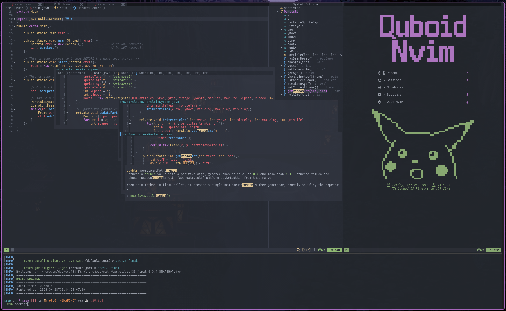
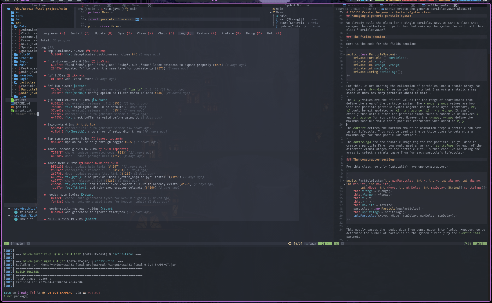

I have been using Neovim for a almost 2 years and have learned many interesting things about editors that I wouldn't have given a second thought to otherwise. One of the core reasons I went with Neovim over Vim is due to its native LSP (Language Server Protocol) support. This standard allows me to use and extend standard Language Servers for commmon languages ranging from Typscript, to lua which Neovim is configured in, to even Java with Eclipse's Language Server. These Language Servers Enable everything ranging from Diagnostics, Autocompletion, Jump-to-{Definition, Implementation, etc.}, Smart Folding, Organizing Imports, Code Actions, and many other useful features. The coolest thing about this is that I can develop and tinker with any language from the same core program, each setup with compeditive tooling, and even take my notes for my classes and dev journals. While I understand it won't work with plenty of companies proprietary shenanigans, it is what I have found works best for me when it comes to tinkering, and at least it's not emacs.
 